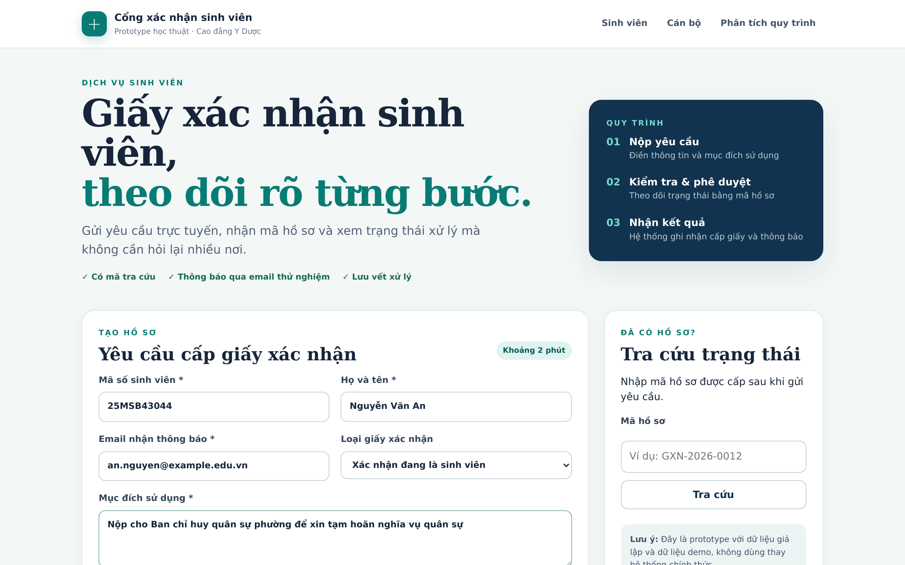
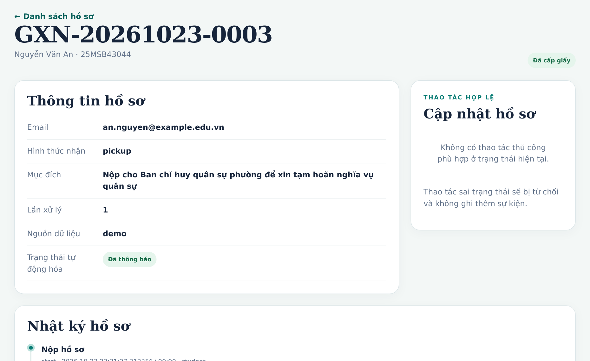
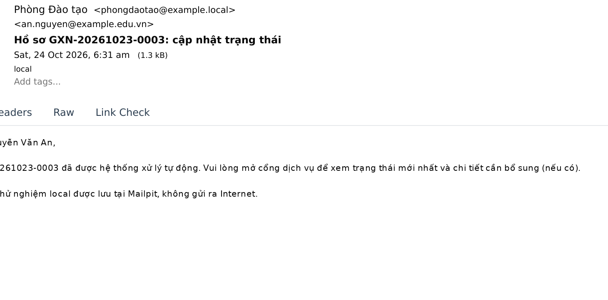

Nộp
Chờ ký
Nhận giấy
điểm nghẽn
Bài nhóm · BPM & AI
Phân tích và tự động hóa quy trình tại trường cao đẳng Y Dược
Nhóm 4 · TV1 · TV2 · TV3 · TV4
Bối cảnh giả định cho mục đích học thuật
Số thứ tự ghi sổ không báo cho SV, nên SV phải hỏi lại
Thiếu hoặc sai chỉ lộ ra khi kiểm tra, phải bổ sung nhiều vòng
Hồ sơ đã soạn nằm chờ phiên ký theo lô
Không có mốc thời gian; cán bộ rà hồ sơ quá hạn mỗi chiều thứ Sáu
Báo kết quả qua điện thoại hoặc Zalo, không có bằng chứng đã báo
Mục tiêu dự kiến
Có mã hồ sơ, tra được trạng thái
Kiểm tra đủ hay thiếu ngay khi nộp
Tách thời gian chờ và thời gian xử lý
Nhắc hạn, đóng hồ sơ quá hạn đúng hạn
Thông báo có lưu vết và có lý do
Sinh viên nộp yêu cầuđơn giấy hoặc form
Trường xử lý
Tiếp nhận, ghi sổ
Kiểm tra thông tin, tư cách
Soạn giấy, trình ký
Ký, đóng dấu, báo kết quả
E1 · Nhận giấy
E2 · Bị từ chối, có lý do
E3 · Đóng do quá hạn bổ sung
Sinh viên
Cán bộ
Lãnh đạo
Văn thư
1 · Nộp đơn
2 · Tiếp nhận, ghi sổ
3 · Kiểm tra, soạn giấy
4 · Xem xét, ký
5 · Đóng dấu, vào sổ
6 · Báo SV
đến nhận
7 · Nhận giấy
Hồ sơ chờ tới phiên ký thứ Ba hoặc thứ Năm
Luồng chính khi hồ sơ đủ và được duyệt. Các nhánh bổ sung, từ chối, quá hạn: slide sau.
Kiểm tra hồ sơ
ĐỦ
soạn giấy, trình ký
THIẾU / SAI
báo SV bổ sung
KHÔNG ĐỦ TƯ CÁCH
đề xuất từ chối
SV nộp lại trong hạn
↺ kiểm tra lại
Quá hạn → đóng (E3)
lộ ra khi rà sổ thứ Sáu
từ nhánh ĐỦ hoặc KHÔNG ĐỦ TƯ CÁCH
Lãnh đạo
quyết định
DUYỆT
ký, đóng dấu
→ E1 nhận giấy
TỪ CHỐI
báo lý do
→ E2
Hồ sơ không đủ tư cách vẫn qua lãnh đạo: cán bộ chỉ đề xuất, không tự từ chối.
Tiếp nhận
Kiểm tra
Soạn giấy
Ký
Đóng dấu
Báo SV
Nhận giấy
H1
H2 ↺
H3
H4
Soạn giấy → lãnh đạo ký
Vì sao: ký theo lô, người ký vắng
Hậu quả: kéo dài thời gian phía trường; SV hỏi lại
Kiểm tra → báo bổ sung → nộp lại
Vì sao: biểu mẫu không nêu rõ giấy tờ
Hậu quả: làm lại nhiều lần; thêm hồ sơ bị đóng quá hạn
Tiếp nhận → kiểm tra
Vì sao: cán bộ kiêm nhiệm, tra cứu tay
Hậu quả: ứ đọng đầu vào, hồ sơ nằm lâu
Lãnh đạo ký → văn thư
Vì sao: giấy đã ký chờ chuyển theo lô
Hậu quả: thêm thời gian không ai theo dõi
Tiêu chí chốt trước khi chạy dữ liệu: trung vị chờ nằm trong top 3 · ít nhất 50% ca chờ quá 1 ngày làm việc · xuất hiện ở ít nhất 10% số ca. Đạt cả ba mới gọi là điểm nghẽn.
Dữ liệu mô phỏng
400
hồ sơ mỗi lần chạy, 12 tuần
20
lần chạy, mỗi lần một bộ số ngẫu nhiên
7
cấu hình: AS-IS + 2 kịch bản × 3 mức bổ sung
Ký theo lô thứ Ba, thứ Năm 14:00
Phải bổ sung: 30% lần đầu, 15% lần sau
Quá hạn phát hiện khi rà sổ thứ Sáu
Form web, email, nhắc hạn tự động
Vẫn ký theo lô như hiện tại
Bổ sung 15% / 8%, thử thêm 22% và 30%
Như S0
Ký 2 lần mỗi ngày, 10:30 và 16:00
Tách được tác động của lịch ký
Giữ nguyên ở cả ba: số hồ sơ đến, loại giấy, hành vi SV, 1 cán bộ tiếp nhận
Dữ liệu mô phỏng
Số trên mũi tên: trung vị phút chờ giữa hai bước
Nộp đơn
Tiếp nhận
Kiểm tra
Soạn giấy
Ký
Đóng dấu
Xác nhận cấp
Báo SV
249′*
12′
10′
621′
135′
27′
54′
SV bổ sung
báo bổ sung
nộp lại
SV chuẩn bị bổ sung mất trung vị 826′, nhưng đó là thời gian của SV, không tính vào điểm nghẽn của trường.
Các đường đi của hồ sơ
62,3% đi thẳng
18,5% bổ sung 1 vòng
4,5% bổ sung rồi bị đóng quá hạn
3,5% bổ sung 2 vòng
3,2% không đủ tư cách, bị từ chối
621 phút
trung vị chờ từ lúc soạn xong giấy tới lúc lãnh đạo ký
63% số ca chờ quá 1 ngày làm việc · có ở 369/400 ca
Đạt cả ba tiêu chí → điểm nghẽn H1
Seed 20260302 · phút làm việc, 1 ngày = 450′ · *249′ chủ yếu do quy ước: đơn giấy chỉ ghi ngày nên tính từ 7:30
Dữ liệu mô phỏng
Hồ sơ mẫu
Phía trường
Chờ ký
C001 · đi thẳng, được duyệt
843
555
C002 · bổ sung 1 vòng
1.693
585
C003 · không đủ tư cách
1.233
–
C004 · quá hạn bổ sung, đóng
5.740
–
Đơn vị: phút làm việc. C004: trễ phát hiện quá hạn 2.130′; thời gian ròng tới lúc đóng 2.235′.
12 test tự động đạt
Hàm lịch làm việc khớp bộ tính tay C001–C004
Hàm KPI kiểm trực tiếp trên ca C001
Log đúng quy tắc: bắt đầu trước khi xong, chỉ đóng dấu sau khi duyệt
Codex và Antigravity (Gemini) rà code 2 đợt; lỗi tìm được đã sửa trước khi chốt số
Hôm nay
Sau cải tiến
Đơn giấy, thiếu gì mới biết
Form web + danh sách giấy tờ cần nộp
Tự động hóa
Ghi sổ tay, SV không tra được
Mã hồ sơ, email xác nhận, tra cứu trạng thái
Tự động hóa
Ký theo lô thứ Ba, thứ Năm
2 khung ký mỗi ngày, cảnh báo nếu chờ quá 1 ngày
Đổi cách làm
Báo qua điện thoại, rà sổ thứ Sáu
Email có lưu vết, nhắc trước hạn, đóng đúng hạn
Tự động hóa
Giữ nguyên: lãnh đạo quyết định · ký và đóng dấu giấy · tiêu chí tư cách
Sinh viên
Hệ thống
web + n8n
Cán bộ
Lãnh đạo
Văn thư
1 · Nộp form web
2 · Kiểm tra form, cấp mã, gửi email
3 · Cán bộ kiểm tra tư cách
4 · Sinh giấy từ mẫu
5 · Lãnh đạo ký 10:30 hoặc 16:00
6 · Email kết quả, báo văn thư
7 · Nhận giấy
Ô xanh đậm: hệ thống tự làm. Nếu thiếu giấy tờ, hệ thống gửi email bổ sung, nhắc trước hạn và đóng hồ sơ đúng hạn.
Người dùng
SV, cán bộ, lãnh đạo
Web app (FastAPI)
bên duy nhất ghi trạng thái
n8n
điều phối: kiểm tra, gửi email
PostgreSQLhồ sơ, nhật ký sự kiện
Mailpithộp thư thử, không ra Internet
① thao tác
② lưu hồ sơ, nhật ký
③ webhook
④ gửi email
⑤ báo đã gửi
Web chỉ hiện “Đã thông báo” khi n8n báo lại ở bước ⑤. n8n lỗi thì hồ sơ giữ trạng thái chờ, không báo thành công giả.
TriggerWebhook từ web
Data sourceĐọc hồ sơ qua API
ConditionCần tiền kiểm?
ConditionĐủ điều kiện, đủ thông tin?
Có
ActionGhi: đạt
ActionGhi: cần bổ sung
NotificationGửi email
Không: chỉ gửi thông báo
Action ×2Báo lại web, phản hồi
1 trigger · 1 data source · 2 condition · 4 action · 1 notification, vượt mức tối thiểu của đề (1 · 1 · 1 · 4 · 1).

1 · SV nộp form
Nhận mã hồ sơ GXN-…; n8n tiền kiểm tự động

2 · Cán bộ xử lý
Mỗi bước ghi vào nhật ký; làm sai thứ tự bị chặn; hiện “Đã thông báo”

3 · Email trong Mailpit
Có bằng chứng thư đã gửi
Đã chạy thử qua giao diện ngày 24/10/2026: luồng cấp giấy và vòng yêu cầu bổ sung đều đạt.
Dữ liệu mô phỏng
Thời gian phía trường · trung vị, phút
AS-IS
1.363
S0
944
S1
788
Chờ trước khi ký · trung vị, phút
AS-IS
551
S0
584 · không giảm
S1
121
S0: chỉ tự động hóa, vẫn ký theo lô · S1: tự động + ký 2 lần/ngày
S1 tốt hơn AS-IS ở 20/20 lần
S0 giảm chờ ký ở 0/20 lần (3/20, 4/20 khi tỷ lệ bổ sung 22%, 30%)
Thao tác cán bộ: 43 → 21 phút mỗi hồ sơ
Trễ phát hiện quá hạn: 1.239′ → 0
Không được kết luận hiệu quả thực tế tại trường, hay phần mềm tự nó làm giảm chờ ký.
Giới hạn: tham số là giả định, 1 cán bộ tiếp nhận, chưa loại trừ ngày lễ; prototype chưa có nhắc hạn và đóng quá hạn tự động.
1
Thu nhật ký thật
Sổ tiếp nhận, phiếu trình, sổ văn thư của một học kỳ, dựng thành event log
2
Chạy lại Process Mining
Hiệu chỉnh tham số, xác nhận hoặc bác giả thuyết chờ ký H1
3
Thí điểm nhỏ
Lịch ký 2 khung giờ và form web cho một loại giấy, đo hằng tuần
Tiếp theo: demo 10 phút